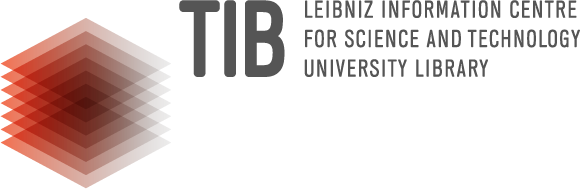
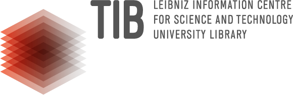

Open Museum Guidebooks: A Citizen Science Experience
Computational Publishing Sevice (CPS) Proof of Concept Prototype - Citizen science open museum guidebooks.

The idea! Museum have a calendar of exhibitions and a catalogue of what is on display in any give show. But this is not publishing in data repositories.
Welcome to ‘Open Museum’! If museums made deposits of open data of what’s on show — then their visitors could make ‘play lists’ of their favourite works and share them online.
The ‘Open Museum’ pitch is that the public take part in this cataloguing and a Citizen Science Experience.
The prototype ‘Open Museum Guidebooks’ has outlined the idea and is sharing the ‘how to’ model using Wikibase as a foundation. We believe all the infrastructure is already out there and with luck museums back catalogues could be online in no time (famous last words).
A project made the students of the Bachelor course Information Management (BIM) of Hannover University of the Applied Science and Arts in partnership with Computational Publishing Service from the Open Science Lab - TIB, and with NFDI4Culture – Consortium for Research Data on Material and Immaterial Cultural Heritage.
 
 
- Use case
- A museum visitor makes a list of items that are significant to them and they want to share. The list shows the item on a map and as a table, with links to more information and data.
- A person finds the list online and make a visit to the museum.
- The public catalogues exhibition dates and information on Wikidata. The public catalogues items on display in an exhibition.
- Value proposition
- The public can learn about chosen topics using museums.
- The public can learn data science skills.
- Museums can attract more visitors.
- Museums can support deep learning in their respective knowledge domains.
- A permanent record of museums work will be created.
- Persona and storyboard (user needs / what is blocking the user)
- Musuem visitor: Needs: The visitor want to share info with friends and family about their favourite artworks. Blocking: The museum has no data feed of exhibition dates or what is being exhibited. If the visitor wanted to share the information it would be a long, long, labour of love.
- Musuem exhibition organiser: Needs: Visitors and engagement. Blocking: No exhibition data available for people to find out about contemporary or past exhibitions. The museum should have all this data but is not making it public.
- Special interest group (Climate change education group): Need: Ensure access to understanding of climate change is represented in regional museums. The group would contribute volunteer time to cataloging efforts and outreach. Blocking: Not able to find dates of exhibitions or information about what was exhibited.
- Problem / solution
Problem: A museum visitor cannot share information about exhibitions or the exhited items as museums don’t publish this data.
Solution: Support museums visitors to publish and use the data as a citizen science project ‘Open Musuem’. The data is has two parts: A. A calendar of exhibitions, and B. A catalogue of items in an exhibition. Both of these data would be catalogues and indexed using Wikimedia infrastructure.
- A schematic
+--------------------+ +---------------------+ +-------------------+ | | | | | | | | | | | | | | | | | | | | | | | | | Data +------------> The public +------------>| Learning | | | | | | | | | | | | | | | | | | | | | | | | | +--------------------+ +---------------------+ +-------------------+
About
A prototype project being made with the students of the Data Science course of Hannover University of the Applied Arts and Sciences - Seminar: BIM-126-02 Data Science (2025), March - June 2025.
The project is to create a system where museum visitors create their own publication guides to museums using linked open data. The project is intended as a citizen science project and for this reason aspects of participation by the public and engagement with scholarship and learning are a priority.
As a basis for the prototype the Computational Publishing Service demo is being used. See: CPS Demo #2
The Spengel Museum Hannover will be used as the example museum. See the museum data profile on Wikidata Resonator
Project inspired by the 1700s database - Corpus Johann Joachim Winckelmanns (1717–1768). Census.de
Run Notebooks

Project status and roadmap
- Ideation
- Wikidata and Wikibase technical setup
- Assign roles
- Technical tests
- Iteration
- Presentation and scholarly deposit - Current
Tutorials
- CPS Demo publishing Github Template use - https://github.com/NFDI4Culture/cps-demo-2/wiki
- Using and editing Wikidata and wikibase - https://www.wikidata.org/wiki/Wikidata:In_one_page | https://dashboard.wikiedu.org/training/wikidata-professional/orientation-wikidata-professional | https://meta.wikimedia.org/wiki/A_Beginner%27s_Guide_to_Wikidata_for_Cultural_Heritage | https://learn.wiki/courses
- Wiki Commons bulk image upload - https://computational-publishing-service.wikibase.cloud/wiki/Upload_Images_to_Wikimedia_Commons
- Wiki Commons to Wikibase Cloud bulk image metadata upload - https://computational-publishing-service.wikibase.cloud/wiki/Tutorial
- Create an organisation data profile and dashboard - To be confirmed
Ideas being worked with
- History from below or people’s history or perspective of people in Hannover
- Timelines
- Images guide on a map
- Why don’t museums have a timeline of future shos and past shows - like ical?
- How to connect people’s history with scholarly works stories
- What is the mission, goals, programmes, and measuring of suceess of the museum organisation?
- What open research profile and policies does the organisation have?
Modules
How to get images on a map - https://commons.wikimedia.org/wiki/File:Sprengel_Museum_Hannover_entrance_Kurt-Schwitters-Platz_Suedstadt_Hannover_Germany_02.jpg
https://wikimap.toolforge.org/?wp=false&cluster=false&zoom=16&lat=052.363410&lon=0009.739315
How to make timelines
How to make an organisations data Dashboard to catalogue from Wikidata